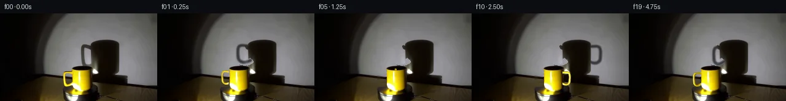

![首帧]()

Round 00
2026-11-05T03:56:31.680708+00:00像素候选变化代码 +288/−0inspection 更新
pixels 4a1ac276313286ab · code b3af0f6b2d30073d
查看本轮 generate.py 真实 diff
--- previous/generate.py
+++ current/generate.py
@@ -0,0 +1,288 @@
+"""PixelWorld continuation: source compositing and local mathematical tube rendering.
+No external models, scene assets, engine, or image-view tools are used.
+"""
+from pathlib import Path
+import json
+import numpy as np
+from PIL import Image, ImageDraw
+from scipy.ndimage import gaussian_filter, map_coordinates, binary_dilation
+from scipy.interpolate import CubicSpline
+import cv2
+from artifact_io import save
+
+ROOT = Path(__file__).resolve().parent
+W,H,S = 256,144,4
+SOURCE = np.array(Image.open(ROOT/'first_frame.png').convert('RGB'))
+F = SOURCE.astype(np.float64)
+YY,XX = np.mgrid[:H,:W]
+ELEV = np.deg2rad(13)
+SA,CA = np.sin(ELEV),np.cos(ELEV)
+AXIS_X,BASE_Y = 132.3,125.5
+RADIUS,HEIGHT = 15.8,36.3
+
+# The U-shaped tube begins and ends within the mug, so its attachments disappear
+# naturally into the cylindrical shell when depth tested.
+PATH_SCREEN = np.array([
+ [120.0,97.5],[112.0,97.0],[106.5,98.0],[105.0,101.5],
+ [105.0,109.0],[106.0,114.0],[110.0,116.6],[115.0,116.0],
+ [120.0,113.5]
+])
+path_qz = np.column_stack([AXIS_X-PATH_SCREEN[:,0],
+ (BASE_Y-PATH_SCREEN[:,1])/CA])
+arc = np.r_[0,np.cumsum(np.linalg.norm(np.diff(path_qz,axis=0),axis=1))]
+spline = CubicSpline(arc,path_qz,axis=0,bc_type='natural')
+u = np.linspace(0,arc[-1],100)
+qz = spline(u)
+tangent = spline(u,1)
+tangent /= np.linalg.norm(tangent,axis=1)[:,None]
+# Slightly wider tube at the lower elbow matches the source handle.
+radii = 1.65 + .20*np.exp(-((u/arc[-1]-.73)/.15)**2)
+beta = np.linspace(0,2*np.pi,20,endpoint=False)
+triangles=[]
+for k in range(len(u)-1):
+ for j in range(len(beta)):
+ a=k*len(beta)+j;b=k*len(beta)+(j+1)%len(beta)
+ c=(k+1)*len(beta)+j;d=(k+1)*len(beta)+(j+1)%len(beta)
+ triangles.extend([(a,b,c),(b,d,c)])
+triangles=np.asarray(triangles)
+
+
+def mesh(angle):
+ """World X right, Y away from camera, Z up. Left rotates toward rear."""
+ radial=np.array([-np.cos(angle),np.sin(angle),0.0])
+ side=np.array([-np.sin(angle),-np.cos(angle),0.0])
+ up=np.array([0.,0.,1.])
+ center=qz[:,0,None]*radial+qz[:,1,None]*up
+ # Tangent's perpendicular in the handle's vertical plane.
+ plane_normal=-tangent[:,1,None]*radial+tangent[:,0,None]*up
+ normal=(np.cos(beta)[None,:,None]*side+
+ np.sin(beta)[None,:,None]*plane_normal[:,None,:])
+ pts=center[:,None,:]+radii[:,None,None]*normal
+ return pts.reshape(-1,3),normal.reshape(-1,3)
+
+
+def project(points,wall=False):
+ if wall:
+ # A fixed oblique spotlight projection calibrated to the wall silhouette.
+ # It includes depth shear, so the wall shadow isn't a camera-space copy.
+ x=171.5+1.4*(points[:,0]-.30*points[:,1])
+ y=94.0-1.4*CA*points[:,2]-.21*points[:,1]
+ depth=np.zeros(len(points))
+ else:
+ x=AXIS_X+points[:,0]
+ y=BASE_Y-SA*points[:,1]-CA*points[:,2]
+ depth=-CA*points[:,1]+SA*points[:,2]
+ return np.column_stack([x,y]),depth
+
+
+def illumination(points,normals):
+ # Fixed source in front-left and below the handle, producing yellow glaze
+ # and a small warm-white specular lobe. Used to modulate source texture.
+ light=np.array([-98.0,-180.0,-40.0])-points
+ light/=np.linalg.norm(light,axis=1)[:,None]
+ diffuse=np.maximum(np.sum(normals*light,axis=1),0)
+ view=np.broadcast_to(np.array([0,-CA,SA]),light.shape)
+ half=light+view;half/=np.linalg.norm(half,axis=1)[:,None]
+ spec=np.maximum(np.sum(normals*half,axis=1),0)**25
+ return .39+.61*diffuse,spec
… diff truncated; 201 more lines …